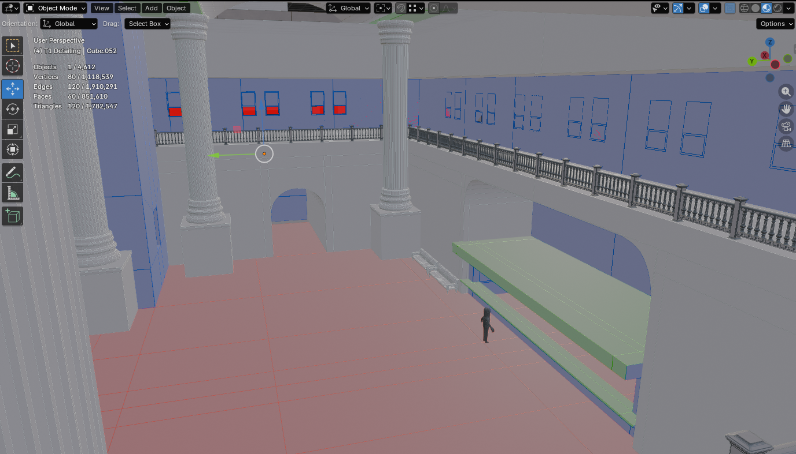
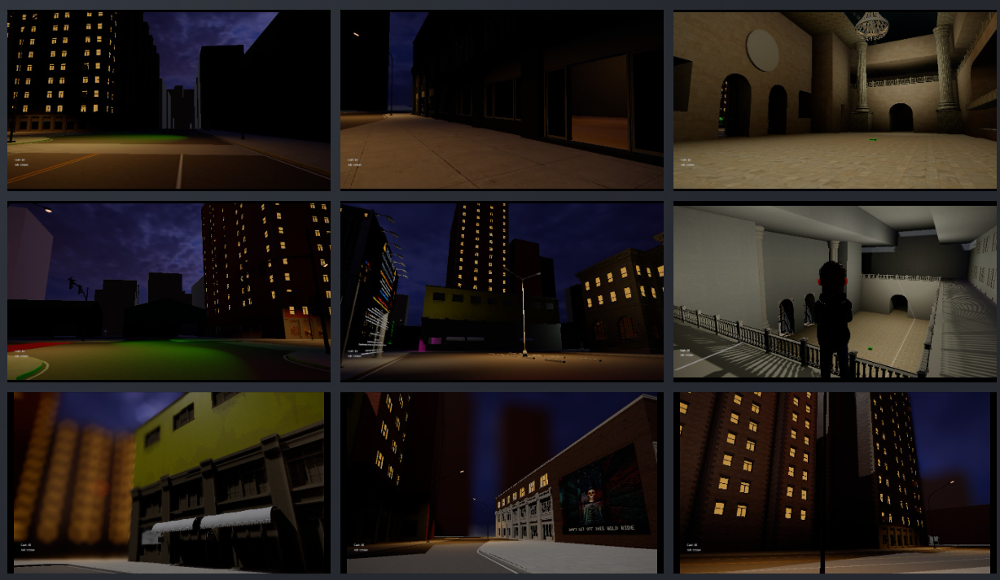

Since the March 31 devlog
The last public AfterDarkRP update focused on Ghetto 01, material work, LOD coverage, and getting the district closer to a testable state.
The month after that did not slow down into one small cleanup pass. The actual darkrp_ns repo shows a sustained stretch of work across:
- the original map being scrapped in favor of a much larger-scale Version 2 direction,
- S17 map buildout,
- repeated lighting and material passes,
- more scene structure and support assets,
- stronger prop and toolgun policy for live-play reliability,
- and the first real resident NPC/navigation layer for making the city feel inhabited instead of staged.
This was not one headline feature. It was a broad push to make the world bigger, more readable, and harder to break.
The project pivoted to a larger Version 2 map
One of the most important reality checks from this month is that the earlier map direction was effectively scrapped in favor of Version 2, with a much larger overall scale.
That is not a small revision. It changes what the current work actually means. A lot of the month was not just polish on an old shell. It was production effort going into a broader city direction with more room to find the real limits of the engine, the scene, and the project structure before locking the rest of the world around it.
That also explains why some of the work reads like foundational world-building rather than finish-line content. The map target itself got bigger.
S17 kept expanding
The clearest story in the repo is that S17 kept picking up real mass.
Across early and mid April, the project added and revised:
- more Downtown structures and road pieces,
- more Ghetto roads, junctions, and building support,
- more TrainStation structures, interiors, stairs, fences, roads, and supporting assets,
- additional terrain shaping and background support,
- and large direct edits to the live scene and baked nav data.
That matters because this is the kind of work that turns a promising blockout into actual navigable space. It improves route logic, district shape, sightlines, connector planning, and the amount of city shell the gameplay can lean on.
New captures




Lighting and material passes were a major part of the month
This stretch was not just new geometry.
Multiple commits through April 11, 2026 to April 26, 2026 kept returning to:
- lighting polish,
- post-process tuning,
- exterior light setup,
- street-light behavior,
- time-of-day timing,
- and material cleanup.
That is important because AfterDarkRP depends heavily on atmosphere. The city needs to read like a place with pressure and identity at night, not just a technical layout with props dropped into it. The lighting work is doing more than visual polish. It is shaping readability, mood, and how districts feel under movement.
The map also got more rules, not just more assets
One of the more useful additions late in the month was a stronger prop policy and toolgun policy layer.
That work added host-side rules for things like:
- player prop caps,
- no-prop zones around protected areas,
- blocked or restricted model handling,
- protected DarkRP targets,
- and own-prop-only expectations for toolgun actions.
That is not flashy screenshot work, but it matters for a multiplayer sandbox. If players can grief protected systems, clutter key spaces, or use tool interactions on things that should be locked, the session falls apart fast. This pass makes the world easier to trust once more of the map becomes actively usable.
Resident NPC groundwork started showing up
By the end of the month, the repo also added the first real pass on resident population and NPC navigation support.
That includes:
- home-door markers,
- route and waypoint markers,
- resident profile definitions,
- resident outing and return behavior,
- scene/navmesh support for moving them through the world,
- and supporting NPC safety/runtime rules.
The important part is not that the city suddenly has a full civilian simulation. It does not. The important part is that AfterDarkRP is beginning to gain the authoring layer needed for ambient life, routine movement, and a more believable city rhythm.
That changes the project direction in a meaningful way. The map is no longer only being treated as geometry for player routes. It is starting to gain structure for inhabitants, not just encounters.
Gameplay support kept moving with the world
The month was also not purely environment work.
The repo activity in this window includes support systems such as:
- NPC runtime safety handling,
- entity shop updates,
- road optimization work,
- business shell support,
- and continued time/light system iteration.
That is worth calling out because the project is still converging around the same practical goal: make the map and the gameplay systems sturdier together, instead of letting world work and rules work drift apart.
Note from the dev
The honest version is that time was split this month between game development and client work, so the project did not get the same uninterrupted focus I would have liked.
That split shows up in the shape of the work. There was still real progress, but a lot of it landed as broader environment, lighting, support-system, and stability passes instead of one tighter systems-heavy sprint.
The upside is that the recent NPC work is stable again, the game launches tomorrow, April 28, 2026, and focus can start shifting back toward deeper systems and code work instead of staying spread across too many fronts.
What this month adds up to
If the repo is the source of truth, the month after the March 31 devlog adds up to this:
- The earlier map direction was dropped in favor of a larger Version 2 build.
- S17 got larger and more connected.
- Ghetto, Downtown, and TrainStation all kept gaining support.
- Lighting, materials, and time tuning kept getting real attention.
- The map picked up stronger anti-grief and build-control rules through prop/toolgun policy.
- The first resident NPC/navigation layer started taking shape.
That is a strong month for a project that still needs both world density and systems discipline before broader testing can really mean anything.
What comes next
- Return more direct focus to systems and code work now that the NPC layer is stable again and launch pressure is about to clear.
- Focus polish on the Train District first so it becomes the main area for finding engine limits and identifying what has to be optimized before the city expands further.
- Use the Train District as a controlled playtest zone instead of trying to validate the entire map at once.
- Keep tightening lights, materials, and time behavior so the city mood lands without sacrificing readability.
- Expand resident and NPC route authoring carefully so ambient life supports the world instead of creating noise.
- Keep hardening prop, toolgun, and protected-area rules so multiplayer testing does not turn into cleanup duty.
The last month was not a quiet one. It was a broad production push that made AfterDarkRP feel more like a real world under construction and less like a collection of disconnected passes.
Signed, Codex